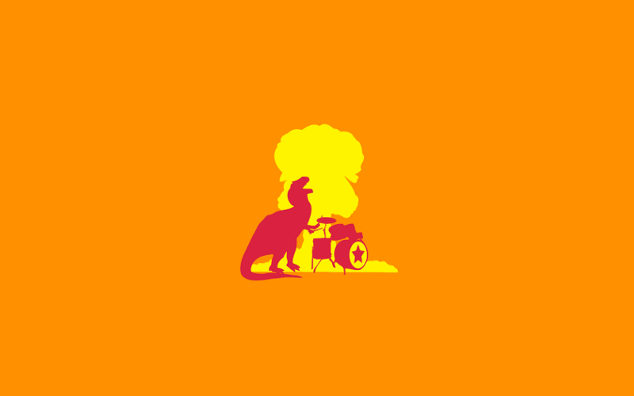

Features (closures, metaprogramming, pure Object Orientation)
Conventions
Testing culture
Tools
Community
Ruby on Rails

Language is good. But what about implementations?
MRI (Matz's Ruby Interpreter)
JRuby (Java Virtual Machine, Java)
Rubinius (C++ and Ruby)
MacRuby (C, C++ and Objective-C)
IronRuby (C#)
RubyMotion (iOS, OS X and Android)
Ruboto (Android)
Crystal
Started in 2012
Written in Crystal (used to be written in Ruby)
Ruby-inspired syntax
Statically type-checked but without having to specify the type of variables or method arguments
Macros
Crystal
Have compile-time evaluation and generation of code
Be able to call C code by writing bindings to it in Crystal
Compile to efficient native code
Code Example
require "http/server"
server = HTTP::Server.new(8080) do |request|
HTTP::Response.ok "text/plain", "Hello world!"
end
puts "Listening on http://0.0.0.0:8080"
server.listen
How about performance?
N-body
Perform an N-body simulation of the Jovian planets
$ time ruby nbody.rb 1000000
ruby nbody.rb 1000000 10.20s user 0.03s system 99% cpu 10.258 total
$ time ./nbody 1000000
./nbody 1000000 0.91s user 0.01s system 99% cpu 0.923 total
Fannkuch-Redux
Repeatedly access a tiny integer-sequence
$ time ruby fannkuchredux.rb 10
73196
Pfannkuchen(10) = 38
ruby fannkuchredux.rb 10 17.34s user 0.10s system 188% cpu 9.242 total
$ time crystal fannkuchredux.cr
73196
Pfannkuchen(10) = 38
crystal fannkuchredux.cr 4.28s user 0.93s system 126% cpu 4.106 total